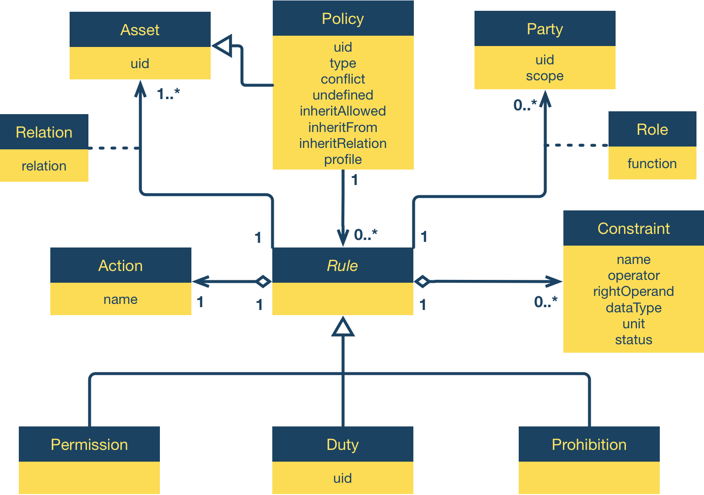

The ODRL permissions and obligations expression language provides a flexible and interoperable information model, vocabulary, and encoding mechanisms for describing statements about digital content usage. The ODRL Information Model describes the underlying concepts, entities, and relationships that form the foundational basis for the semantics of the ODRL statements.
This is a work in progress. No section should be considered final, and the absence of any content does not imply that such content is out of scope, or may not appear in the future. If you feel something should be covered, please tell us.
Introduction
The ODRL Information Model defines the underlying semantic model for permissions and obligations statements describing digital content usage. The information model covers the core concepts, entities and relationships that provide the foundational model for content usage statements.
The ODRL Information Model is formally specified using UML notation [[!uml]].
Relationship to the W3C ODRL Community Group Reports
The basis for the deliverables for the Permissions & Obligations Expression Working Group are the reports created by the W3C ODRL Community Group. The ODRL Community Group has developed a family of specifications to support innovative expression of digital asset usage for the publication, distribution and consumption of content services.
The final outputs of the ODRL Community Group were the ODRL Version 2.1 specifications that were a major update for ODRL and superseded the original ODRL Version 1.1 [[odrl]] (published as a W3C NOTE)
The following documents are part of the ODRL Community Group report series:
ODRL V2 Requirements [[odrl2-req]]
ODRL V2.1 Core Model [[odrl21-model]]
ODRL V2.1 Common Vocabulary [[odrl21-vocab]]
ODRL V2.1 XML Encoding [[odrl21-xml]]
ODRL V2.1 Ontology [[odrl21-onto]]
ODRL V2.1 JSON Encoding [[odrl21-json]]
The ODRL Information Model was derived from the ODRL V2.1 Core Model Community Group report. Details of the differences between the W3C Working Group deliverables and the ODRL Community Group Reports are maintained in the Appendix. All new ODRL implementations are expected to use the deliverables of the Permissions & Obligations Expression Working Group.
Information Model
The basic context of an ODRL Policy is that only an explicitly permitted use may be executed. Any use not explicitly permitted is prohibited by default. An ODRL Policy only permits the action explicitly specified in a Permission and all other actions are implicitly prohibited. An action defined in a Prohibition should only refine (or directly relate to) the semantics of an action defined in one of the Permissions in the ODRL Policy.
For example, an ODRL Policy that has the action “present” Permission and may also have the action “print” Prohibition (as these actions are related hierarchically in the ODRL Vocabulary).
Note that ODRL Profiles can be developed and used to refine the basic context of an ODRL Policy. Hence, the application of an ODRL Profile must be understood by the consuming community and systems.
The figure below shows the ODRL Information Model. The Policy is the central entity that holds an ODRL policy together.

ODRL Information Model
As the Information Model diagram shows the key Permission, Prohibition and Duty entities are subtypes of the abstract Rule class and they have the same relationships to the other key entities (Action, Constraint, Asset, and Party). The core difference is in their semantics:
Permission says that the assignee MAY perform an action,
Duty says that the assignee MUST perform an action, and
Prohibition says that the assignee MUST NOT perform an action.
The Rule class also makes it possible to easily extend the Information Model in Profiles by adding policy expressions (as subclasses of Rule) that are not possible by default.
The cardinalities shown in the ODRL Information Model allow for the greatest flexibility in expressing associations between the key entities. However, Policy Types and Profiles may express narrower and/or specific cardinalities on these entities.
A Permission MAY allow a particular Action to be executed on a related Asset, e.g. “play the audio file abc.mp3”. A Constraint like “at most 10 times” might be added to specify the Permission more precisely. The Party that grants this Permission is linked to it with the Roleassigner, the Party that is granted the Permission is linked to it with the Roleassignee, e.g. “assigner VirtualMusicShop grants the Permission to assignee Alice”. Additionally, a Permission MAY be linked to Duty entities.
Similar to Permissions, a Duty states that a certain Action MUST be executed by the Party with the Roleassignee for the Permission to be valid, e.g. “Alice must pay 5 EUR in order to get the Permission to play abc.mp3″.
The Prohibition entity is used in the same way as Permission, with the difference that it MUST NOT refer to Duties and that the Action MUST NOT be exercised, e.g. “Alice is forbidden to use abc.mp3 commercially”.
The following sections describes each entity of the Information Model in greater detail.
Policy
The Policy entity is the top-level entity and contains the following attributes:
uid: the unique identification of the Policy entity (REQUIRED)
type: indicates the semantics of the Policy entity (REQUIRED). These are further described in the Vocabulary and ODRL Profiles.
conflict: indicates the precedence between Permissions and Prohibitions (OPTIONAL)
undefined: indicates how to handle undefined Actions (OPTIONAL)
inheritAllowed: indicates if the Policy entity can be inherited (OPTIONAL)
inheritFrom: the identifier from which this Policy inherits from it’s parent Policy (OPTIONAL)
inheritRelation: the identifier for the relationship type of this inheritance structure (OPTIONAL)
profile: the identifier of the ODRL Profile that this Policy conforms to (OPTIONAL)
The uid attribute MUST be a unique identifier.
The range of values for the Policy entity’s type attribute will be described in the ODRL Vocabulary document or in community profiles. This value MAY also impose further constraints on the Information Model, such as are exemplified in the Scenarios for types Offer and Agreement. It is important that the type attribute be clearly understood in policy expressions as the semantics MAY impose restrictions on the expression language constructs such as cardinalities between entities.
The conflict attribute is used either to resolve conflicts arising from the merging of policies, specifically when there are conflicting Actions in the Permissions and Prohibitions, or to set priorities over the Permissions/Prohibitions in the same policy. If present, the conflict attribute MUST take one of the following values:
perm: the Permissions will always takes precedence
prohibit: the Prohibitions will always takes precedence
invalid: the policy is not valid
If the conflict attribute is not explicitly set, its default value will be used instead. The default value of the conflict attribute is invalid.
Need to clarify conflicting values of the conflict attribute. That is, one policy says perm and the other prohibit.
The undefined attribute is used to indicate how to support Actions that are not part of any profile in the policy expression system. If present, the undefined attribute MUST take one of
the following values:
support: the Action is to be supported as part of the policy – and the policy remains valid
ignore: the Action is to be ignored and not part of the policy – and the policy remains valid
invalid: the Action is unknown – and the policy is invalid
In the support case, even though the Action is unknown, the policy still is valid and the consuming parties or system of the policy MUST be made aware of the unknown Action. This MAY be via a user interface that displays the unknown Action for human readability.
In the ignore case, even though the Action is unknown, the policy still is valid and the consuming parties or system of the policy MAY be made aware of the unknown Action.
In the invalid case with the unknown Action, the policy is invalid and the consuming parties or system of the policy MUST be made aware of this.
If the undefined attribute is not explicitly set, its default value will be used instead. The default value of the undefined attribute is invalid.
Other attributes MAY be added to the Policy entity to support additional functions and requirements. Typically, these will be from different community vocabularies. For example, to indicate the issued date or valid dates of the Policy entity, use of the Dublin Core Metadata Terms would be recommended.
Inheritance
We need to make clear exactly what gets inherited and what gets overriden (if anything)
The inheritAllowed attribute in the Policy entity is used to indicate if the Policy expression can be used in any inheritance relationship. If present, the value of the inheritAllowed attribute MUST take one of the following values:
true: the Policy expression can be used for inheritance
false: the Policy expression can not be used for inheritance
If the inheritAllowed attribute is not explicitly set, its default value will be used instead. The default value of the inherit attribute is true.
Only if the inheritAllowed attribute has the value true can the inheritFrom and inheritRelation attributes be specified.
The inheritFrom attribute in the (child) Policy will uniquely identify (via a UID) the (parent) Policy from which the inheritance will be performed.
The inheritRelation attribute in the (child) Policy will uniquely identify (via a UID) the type of inheritance from the (parent) Policy. For example, this may indicate the business scenario, such as subscription, or prior arrangements between the parties (that are not machine representable). Such terms MAY be defined in the ODRL Vocabulary or Community Profiles. For example, an Assigner and Assignee may have a historical arrangement related to the specific use of content they make available to each other. The business model (identified with a URI) is used in the inheritRelation attribute in their subsequent ODRL policies they exchange. This will require the ODRL policy to be interpreted with the additional information identified by the URI. For example, this may include additional permission actions or constraints (etc) that is documented in their business model arrangement.
Both the inheritFrom and inheritRelation attribute MAY be used independently.
The following restrictions apply when using inheritance:
Single inheritance is only supported. (One Parent Policy to one or more Child Policy entities. No Child Policy can inherit from two or more Parent Policy entities.)
Inheritance can be to any depth. (Multiple levels of Children Policy entities.)
Inheritance cannot be circular.
The Child Policy MUST override the Parent Policy. i.e.: If the same Action appears in the Parent, then it is replaced by the Child version, otherwise the Parent Actions are added to the Child’s Actions.
No state information is transferred from the policy in the Parent Policy to the Child Policy
Profile
The profile attribute in the Policy entity is used to indicate the identifier (URI) of the ODRL Profile for which the policy expression conforms to. This attribute is OPTIONAL, but if the attribute appears, then any consuming system MUST understand the identified ODRL Profile – and all the rules from the Profile MUST apply to the policy expression. If multiple ODRL Profiles are required, then it is recommended that a new identifier be created to identify the combination of Profiles (and document the combined Profiles).
Since the ODRL Vocabulary represents broad needs for policy expressibility, different communities will require less or more concepts from the Information Model and terms from the ODRL Vocabulary. Community profiles of the ODRL model are expected to be developed that adequately document these requirements in respect to the Information Model and Vocabulary. Some requirements for communities developing ODRL Profiles include:
Document any additions to the Information Model
Document any aspects of the Information Model that will have different default values or interpretations
Document which aspects of the Information Model are not being used (deprecated)
Document new Vocabulary terms
Document deprecated Vocabulary terms
Declare the ODRL Profile identifier (URI)
Declare your communities namespace URI (see the various Encoding specifications)
It is recommended that the ODRL Profile URI be the same as the Namespace URI, but this is not mandatory.
Asset
The Asset entity is the subject of an ODRL policy expression that permissions and prohibitions are applied to. The Asset entity can be any form of identifiable resource, such as data/information, content/media, applications, or services. Furthermore, it can be used to represent other Asset entities that are needed to undertake the Policy expression, such as with the Duty entity. The Asset entity is referred to by the Permission and/or Prohibition entities, and also by the Duty entity.
The Asset entity contains the following attribute:
uid: the unique identification of the Asset (REQUIRED)
The identification of the Asset entity is a key foundation of the ODRL Policy language. However, there are some use cases where the ODRL Policy expression MAY be embedded inside the target Asset. In these cases, it MAY be more appropriate to provide, or infer, a link to the Asset entity (as the complete Assetuid may not be known at the time) through the local context. Use of such inference and context MUST be documented in the relevant ODRL community Profile.
Since ODRL policies could deal with any kind of asset, the ODRL Information Model does not provide additional metadata to describe Asset entities of particular media types. It is recommended to use already existing metadata standards, such as Dublin Core Metadata Terms that are appropriate to the Asset type or purpose.
The Relation entity is used to associate the Asset entity with the relevant Permission, Prohibition, and Duty entities
Relation
The Relation entity is an association class and can be used to link to an Asset from either Permission, Duty or Prohibition, indicating how the Asset MAY be utilised in respect to the entity that links to it.
The Relation entity contains the following attribute:
relation: indicates the relationship of the Asset to the linked entity (REQUIRED)
The default value for the relation attribute is target which indicates that the Asset is the primary object to which the Permission, Duty or Prohibition actions apply.
Target is formally defined in the ODRL Vocabulary
Other values for the Relation entity MAY be defined in the ODRL Vocabulary and community Profiles.
Party
The Party entity is the object of an ODRL policy and can be any form of identifiable entity. The Party performs (or does not perform) actions or has a function in a Duty (i.e., assigns the Party to the Rule by associating it with the role it plays in the Rule). The Party entity can be any form of identifiable entity, such as a person, group of people, organisation, or agent. An agent is a person or thing that takes an active role or produces a specified effect.
The Party entity contains the following attributes:
uid: the unique identification of the party (REQUIRED)
function: defines the roles which may be fulfilled by a party in relation to a Rule (REQUIRED)
scope: defines how the role shall be interpreted under different contexts. (OPTIONAL)
The ODRL Information Model does not provide additional metadata for the Party element. It is recommended to use already existing metadata standards, such as [[vcard-rdf]] or [[foaf]], that are appropriate to the Party type or purpose.
The Role entity is used to associate the Party entity with the relevant Permission, Prohibition, and Duty entities.
Role
The Role entity is an association class and can be used to link to a Party from either Permission, Duty or Prohibition, indicating which role the Party takes with respect to the entity that links to it.
The Role entity contains the following attributes:
function: the functional role the Party takes (REQUIRED)
The function attribute MUST support the following values:
assigner: indicates that the Party has assigned the associated Permission, Duty, or Prohibition. In other words, the Party grants a Permission or requires a Duty to be performed or states a Prohibition.
assignee: indicates that the Party has been assigned the associated entity, i.e. they are granted a Permission or required to perform a Duty or have to adhere to a Prohibition.
Assignee and Asignee are formally defined in the ODRL Vocabulary
Other values for the function attribute MAY be defined in the ODRL Vocabulary and community Profiles.
The scope attribute MAY be used to indicate the context under which to interpret the Party entity. If present, the scope attribute MAY take one of the following values:
individual: indicates that the Party entity is a single individual. The linked Permission, Duty or Prohibition is applicable for that individual only.
group: indicates that the Party entity represents a group. The group consisting of many individual members. The linked Permission, Duty or Prohibition is applicable for each member of that group. For example, a (constrained) Permission to play a movie 5 times is valid for each Party member or the Duty to pay 3 EUR has to be fulfilled by each Party member.
Other values for the scope attribute MAY be defined in the ODRL Vocabulary and community Profiles.
Permission
The Permission entity indicates the Actions that the assignee is permitted to perform on the associated Asset. In other words, what the assigner (supplier) has granted to the assignee (consumer).
An ODRL policy expression MAY contain at least one Permission. It is important to verify the semantics of the Policytype attribute as this MAY indicate additional constraints on the Policy expression structure.
If several Permission entities are referred to by a Policy, then all of them are valid.
The Permission entity has the following relations:
Asset: the Permission entity MUST refer to an Asset (where at least one, and only one, relation value is target) on which the linked Action MAY be performed (REQUIRED)
Action: the Permission entity MUST refer to exactly oneAction that indicates the granted operation on the target Asset (REQUIRED)
Party: the Permission MUST refer to one or more Party entities linked via the Role entity (see Section 2.3.1) (OPTIONAL)
Constraint: the Permission MAY refer to one or more Constraints which affect the validity of the Permission, e.g. if the Actionplay is only permitted for a certain period of time (OPTIONAL)
Duty: the Permission MAY refer to one or more Duty entities that indicate a requirement that MAY be fulfilled in return for receiving the Permission (OPTIONAL)
Duty
The Duty entity indicates a requirement that MUST be fulfilled in return for being entitled to the referring Permission entity. A Duty MUST only be associated with a Permission.
While implying different semantics, the Duty entity is similar to Permission in that it is an Action that can be undertaken. If a Permission refers to several Duty entities, all of them MUST be fulfilled for the Permission to become valid. If several Permission entities refer to one Duty, then the Duty only has to be fulfilled once for all the Permission entities to become valid.
The Duty entity contains the following attributes:
uid: a unique identification for this Duty. Used to refer a single Duty to multiple Permission entities (OPTIONAL)
The Duty entity has the following relations:
Action: indicates the operation that MUST be performed (REQUIRED). Note: It is assumed that the assigned Party has the appropriate permissions to perform this action.
Party: a Duty MAY refer to Party entities with different Roles. If no explicit Party is linked to as assignee or assigner, the Parties with the respective Roles are taken from the referring Permission. (OPTIONAL)
Asset: a Duty entity MAY refer to an Asset (where at least one, and only one, relation value is target) related to fulfilling the Duty. (OPTIONAL) For example, a nextPolicyAction must be linked to the identifier of a target policy Asset.
Constraint: a Duty MAY link to one or more Constraints (OPTIONAL)
A Duty entity does not by default specify any conditions on when the DutyAction MUST be performed in order for the Permission to be exercised. Such temporal conditions MAY be expressed through additional Constraints.
For example, to support cases where the Duty MUST be performed for each Action on an Asset before it is exercised (for example, a pay-per-view scenario) then the use of a Constraint (e.g. count=1) on the Permission (e.g. play) and a temporal (or event) Constraint on the Duty can express this semantics.
Prohibition
The Prohibition entity indicates the Actions that the assignee is prohibited to perform on the related Asset. Prohibitions are issued by the supplier of the Asset – the Party with the Roleassigner. If several Prohibition entities are referred to by a Policy, all of them must be satisfied.
The Prohibition entity has the following relations:
Asset: the Prohibition entity MUST refer to an Asset (where at least one, and only one, relation value is target) on which the Action is prohibited (REQUIRED)
Action: the Prohibition entity MUST refer to exactly oneAction that is prohibited (REQUIRED)
Party: the Prohibition MAY refer to one or more Party entities linked via the Role entity (see Section 2.3.1) (OPTIONAL)
Constraint: the Prohibition MAY refer to one or more Constraint entities (OPTIONAL)
Action
The Action entity (when related to a Permission entity) indicates the operations (e.g. play, copy, etc.) that the assignee (i.e. the consumer) is permitted to perform on the related Asset linked to by Permission. When related to a Prohibition, the Action entity indicates the operations that the assignee (again the consumer) is prohibited to perform on the Asset linked to by Prohibition. Analogously, when related to a Duty, it indicates the operation to be performed.
Action contains the following attribute:
name: indicates the Action entity term (REQUIRED)
As its value, the name attribute MAY take one of a set of Actionnames which are formally defined in profiles. The ODRL Vocabulary defines a standard set of potential terms that MAY be used. Communities will develop new (or extend existing) profiles to capture additional and refined semantics.
Constraint
The Constraint entity indicates limits and restrictions to the Permission, the Prohibition and the Duty entity. Constraints express mathematical terms with two operands and one operator. For example, the “number of usages” (name) must be “smaller than” (operator) the “number 10” (rightOperand).
If multiple Constraint entities are linked to the same Permission, Prohibition, or Duty entity, then all of the Constraint entities MUST be satisfied. That is, all the Constraint entities are (boolean) anded. In the case where the same Constraint is repeated, then these MUST be represented as a single Constraint entity using an appropriate operator value (for example, isAnyOf).
The Constraint entity contains the following attributes:
name: a name that identifies the left operand of the operation (REQUIRED)
operator: an operator function (REQUIRED)
rightOperand: the right operand of the operation (REQUIRED)
dataType: the datatype of the rightOperand (OPTIONAL)
unit: the units of the rightOperand (OPTIONAL)
status: the current value of the left operand (OPTIONAL)
The name identifies the left operand of the mathematical operation for the Constraint such as “Number of Usages” and “Expiration Date” etc. The operator identifies the comparative operation such as “greater than” or “equal to”. The rightOperand identifies the value that is being compared. The dataType indicates the type of the rightOperand, such as “decimal” or “datetime” and the unit indicates the unit value of the rightOperand, such as “EU dollars”.
When processing policy expressions, these Constraint names MAY be directly linked to a procedure that can determine the outcome of the operations, such as the number of already performed usages and the current date. The name and operator are defined in the ODRL Vocabulary or community profiles.
The status provides the current value of the Constraint variable (i.e. current value of name). This is useful in cases where the current status of Constraints needs to be captured and expressed in the ODRL Information Model.
Scenarios
This section shows a number of policy expression scenarios. In these examples, the different policy expression types that are used are for illustrative purposes only and are not part of this normative specification. Also, the specific Action and Constraint names (etc.) used in these examples are for illustrative purposes only. Please note that formal policy expression types and other entities are defined in the ODRL Vocabulary specification, or in community profiles.
Need to clarify if these Scenarios need to be udated.
This section contains advanced ODRL features. Although not part of the normative specification, they provide an opportunity for communities to experiment with and provide feedback on experiences that may be included in future ODRL versions.
Extended Relations
Extended Relations may tie Permission, Prohibition, Duty, and Constraint entities together with an AND, OR or XOR relationship. Only entities of the same type can be linked with this model. For example, a Permission and Prohibition cannot be linked together within this model. The Extended Relations model supports the following attribute:
operation: may be set with one of the mathematical values AND, OR and XOR. (OR is the default if not specified.)
The following table outlines the semantics of Extended Relations with respect to each of the main entity types.
Permission
Prohibition
Duty
Constraint
OR
The related party may perform any (at least) one of the Actions
The related party MAY NOT perform at least one of the Actions
The related party MUST perform at least one of the Actions
The related Permission/Prohibition/Duty is restricted by at least one of the Constraints
AND
The related party MUST perform all of the Actions
The related party MAY NOT perform all of the Actions
The related party MUST perform all of the Actions
The related Permission/Prohibition/Duty is restricted by all of the Constraints
XOR
The related party MAY perform only one of the Actions
The related party MAY NOT perform only one of the Actions
The related party MUST perform only one of the Actions
The related Permission/Prohibition/Duty is restricted by only one of the Constraints.
Note that Extended Relations are not needed to assign two or more Permissions to a Party entity. In this case simply use as many Assignee relations between Party and Permission as needed.
Remedies
This section will be removed from the next release.
In the ODRL Information Model, Duties are only directly related to Permissions, meaning that for a Permission to become effective, the related Duty should be performed. For some use cases though, it might be useful to attach a Duty to a Prohibition, meaning that if a Prohibition is violated, the Duty has to be performed as a kind of remedy or consequence for the violation.
Not only can a Prohibition have a Duty attached to it as a remedy, even Duties themselves may have remedies, e.g. “For the Permission to play audio file xyz to become effective, you have to perform the Duty ‘pay 2€’. If you don’t perform this Duty (even though you’ve played yxz), you have to remedy this by performing the Duty ‘pay 5€'”.
In order to distinguish between a Duty that has to be fulfilled as a requirement and one that has to be fulfilled as a remedy, different relation names are introduced as shown in the Figure below.
Remedy Model
The relation between Permission and Duty, which was unnamed before, is now named hasRequirement. This is needed not only to make the different semantics clearer, but also because a Duty can refer to yet another Duty as a requirement, e.g. “If you want to print this written article, you have the Duty to attach a particular image of the author, and if you do that, you have the Duty to attribute the image to the photographer”.
Privacy Considerations
An ODRL policy can be of type "Privacy".
Need to add this section for the W3C Horizontal Review on Privacy Considerations.
The POE Working Group gratefully acknowledges the contributions of the ODRL Community Group and the earlier ODRL Initiative. The output of the ODRL Community Group was fundamental to the current model.
In particular the editors would like to thank:
Susanne Guth
Daniel Paehler
Andreas Kasten
for their past editorial contributions.
Changes from the ODRL Community Group Reports
Significant changes in this specification from the ODRL Community Group's draft include:
Added abstract Rule class to the Informaton Model (Issue#24)


Social Network